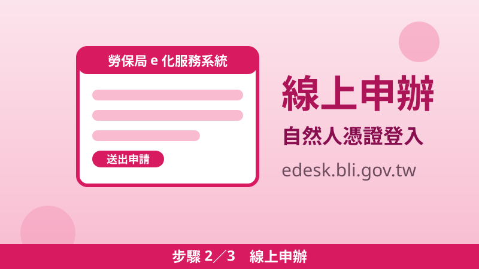

2026 生育給付大升級：國保、沒保險的媽媽每胎 10 萬元，勞保再加碼
生小孩可以領的「生育給付」，看媽媽參加哪一種社會保險而定。2026 年 1 月 1 日起政府再加碼：國保生育給付加上政府加給，每胎合計 100,000 元；連沒有參加任何社會保險的媽媽，也新增每胎 100,000 元的生育補助；勞保被保險人則在原有生育給付之外另有加給。以下資格、金額、申請步驟的數字，全部查證自勞保局與縣市政府官方公告。
沒保險的媽媽：生育補助每胎 100,000 元（新增）
雙胞胎 200,000 元、三胞胎 300,000 元，依此類推
第一步：先看你是哪一種
領多少、向誰申請，完全看媽媽的保險身分。請先對號入座：
| 媽媽的身分 | 適用項目 | 2026 年起金額 |
|---|---|---|
| 有工作、公司有保勞保 | 勞保生育給付＋政府加給 | 原有生育給付照發，另加給生育補助 |
| 待業／家庭主婦，參加國民年金 | 國保生育給付＋政府加給 | 42,206＋57,794＝每胎 100,000 元 |
| 沒參加任何社會保險 | 生育補助（新增） | 每胎 100,000 元 |
勞保生育給付：怎麼算、有加碼嗎
資格。女性被保險人參加勞保滿 280 日後分娩，或滿 181 日後早產（早產指妊娠滿 20 週、未滿 37 週）。在保險有效期間懷孕、退保後 1 年內因同一次懷孕分娩或早產，且符合上述年資者，也可以請領。流產、葡萄胎、子宮外孕不得請領；先生不能以太太生產請領勞保生育給付。
金額。按分娩或早產當月起前 6 個月平均月投保薪資，一次給與 60 日（2 個月）；雙生以上按比例增給。2026 年 1 月 1 日以後分娩或早產的勞保被保險人，除原有生育給付外，政府另加給生育補助（縣市政府官方公告）。
時效與文件。請求權時效 5 年：自分娩或早產得請領之日起 5 年內不行使就會消滅。文件為勞保生育給付申請書及給付收據、嬰兒出生證明書正本（已辦出生登記者可免附）。
國保生育給付：42,206＋57,794＝10 萬元
資格。女性被保險人在國民年金加保期間分娩或早產；或加保期間懷孕、退保後 1 年內因同一次懷孕分娩或早產。前提是未領取其他社會保險生育給付（各社會保險生育給付只能擇一請領）。
金額。原有生育給付按月投保金額一次發給 2 個月（2026 年為 42,206 元）；2026 年 1 月 1 日以後分娩或早產者，政府以公務預算加給 57,794 元，兩筆合計每胎 100,000 元。雙胞胎 200,000 元、三胞胎 300,000 元，依此類推。
沒保險的媽媽：新增每胎 10 萬元生育補助
這是 2026 年新增的項目。條件很單純，三項都要符合：
- 2026 年 1 月 1 日以後分娩或早產；
- 新生兒在國內辦理出生登記或初設戶籍；
- 產婦本人未參加勞保、農保、公保、軍保及國民年金。
符合者可領生育補助每胎 100,000 元，多胞胎按比例增給。若同時符合其他社會保險生育給付資格，則擇一請領。這筆錢不會自動發放，要自己申請，別以為辦了出生登記就自動入帳。
擇一原則：只能選一邊領
同時符合兩種以上社會保險生育給付（或軍公教生育補助）資格時，只能擇一請領——但農保不在此限。實務建議：先試算各邊金額（例如勞保按投保薪資算出的 2 個月 vs 國保的 10 萬元），選金額高的那邊申請，申請前也可先打電話向勞保局確認。
申請三步驟
步驟 1戶政事務所一站式
辦理新生兒出生登記時，可併同申請生育給付／生育補助，一次辦完最省事。

步驟 2線上申辦
勞保局 e 化服務系統（edesk.bli.gov.tw）線上申請，用自然人憑證登入。
步驟 3郵寄或臨櫃
下載申請書填妥後郵寄或親送勞保局各地辦事處。
有疑問可洽勞保局國民年金組：02-23961266 轉分機 2377（縣市政府公告所載諮詢電話）。
📖 延伸閱讀：育兒津貼 2026：自己帶小孩每月領 5,000 元起 ／ 育嬰留職停薪津貼：請育嬰假每月領投保薪資 8 成——領完生育給付，別忘了接著申請這兩筆。
📎 資料來源
- 勞動部勞工保險局「勞保生育給付」請領規定（280日／181日、60日給與、前6個月平均月投保薪資、5年時效、擇一原則）：bli.gov.tw
- 勞動部勞工保險局「國民年金生育給付」FAQ（一次發給2個月月投保金額、2026/1/1起政府預算補足至每胎100,000元）：bli.gov.tw
- 勞動部勞工保險局「未參加相關社會保險者生育補助」（2026/1/1起每胎100,000元、資格與擇一規定）：bli.gov.tw
- 彰化縣政府「國保生育給付加給補助至10萬元」公告（42,206＋57,794＝100,000、勞保／國保／農保另加給、申請方式與諮詢電話）：chcg.gov.tw
最後查證日期：2026-10-24
免責聲明：本文僅供參考，生育給付與補助的資格、金額與申請方式以勞動部勞工保險局最新公告為準；如有疑問請洽勞保局或戶籍地戶政事務所。